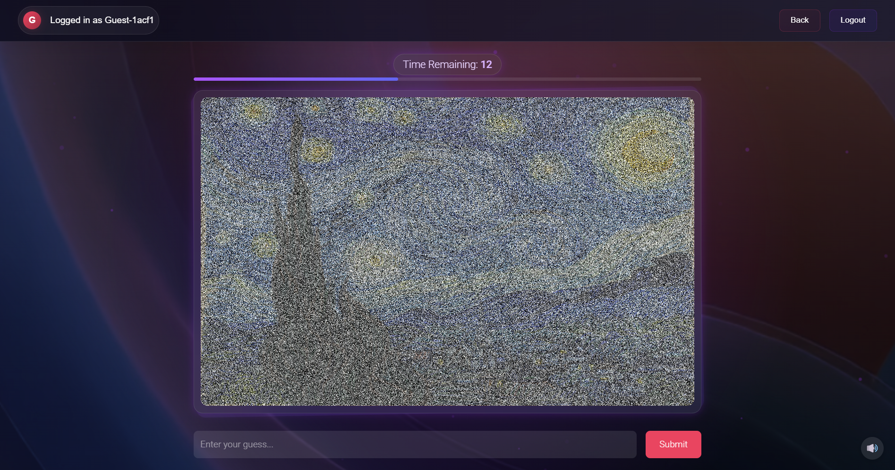

Prompt enhancer LLM for video generation
https://github.com/dariakryvosheieva/video-prompt-enhancer
I fine-tuned an LLM to translate simple video generation prompts into detailed, professional-grade prompts for improved video quality.
The model was initialized from Qwen2.5-14B-Instruct and trained with LoRA in two stages:
- Next-token prediction on synthetic pairs of simple and corresponding detailed prompts;
- Online RL: the model receives a simple prompt, generates a detailed prompt, and is updated via PPO based on the VisionReward score of the resulting Sora video.
Final project for MIT 6.7920: Reinforcement Learning. You can find the model on HuggingFace and view videos made with it on Sora.
Diffuse & Deduce: A diffusion-inspired image game
https://github.com/weblab-class/diffuse-and-deduce D&D is a quiz game that aims to help users broaden their knowledge of the world by learning new visual concepts. Inspired by diffusion models, the game leverages noisy images that gradually denoise with time. The player's goal is to guess the image as early as possible.
Noise is produced by adding a randomly sampled offset to every color
channel of every pixel of the image, with the variance of offsets
decreasing over time. The website uses React + Tailwind CSS for the
frontend and Node.js for the backend, along with
socket.io for real-time interactions between players.
Built in collaboration with Saisneha Ghatti and Peter Lin. Selected as a semifinalist at MIT's web.lab web programming contest. You can play the game here.
Descry: OCR for low-resource writing systems
https://github.com/dariakryvosheieva/descry-ocr
I developed text recognition engines for two new alphabets: Adlam, used to write the Fula language spoken in West Africa, and Kayah Li, used for dialects of the Kayah continuum in Myanmar.
The pipeline for each alphabet consists of a
CRAFT text detector,
which detects bounding boxes of words in an image, and a
CRNN sequence
recognizer, which identifies the word (sequence of characters) in each
bounding box. To train the models, I generated a total of 16,250,000
synthetic images by drawing random Unicode strings on different
backgrounds with Pillow.
Users can interact with the models via a Flask app: you can select an alphabet, upload an image containing text in that alphabet, and have the text recognized.
Tone.me: A Mandarin Chinese tone corrector
https://github.com/tone-me/tone-meTone.me is a web app that helps learners of Mandarin Chinese improve their pronunciation of tones.
It uses a
Wav2Vec2
Transformer finetuned for tone classification to identify tones in a
speech recording and compare them to the correct tones in the words
that the user intended to say. The finetuning dataset consisted of
syllables extracted from the
AISHELL-3 corpus with the
help of stable-ts. The app uses the Next.js web
framework.
Built in collaboration with Riddhi Bhagwat, Chris Ge, Katherine Guo, and Anshul Gupta for the AIM Labs program at MIT.